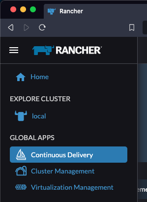
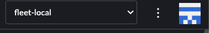
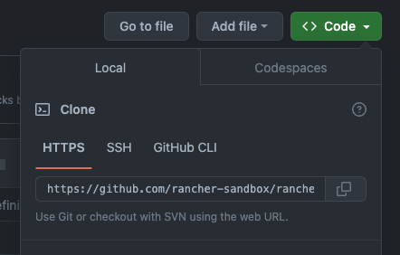

Create & Import Your First Cluster
This section will guide you through creating your first cluster and importing it into Rancher Manager. Two alternative methods for cluster provisioning are presented: using a GitOps workflow with Fleet and manually applying the manifests via kubectl.
Prerequisites
-
Rancher Manager cluster with SUSE® Rancher Prime Cluster API installed
-
Cluster API providers installed for your scenario - we’ll be using the Docker infrastructure and RKE2 bootstrap/control plane providers in these instructions - see Initialization for common providers using Turtles'
CAPIProvider
Provision a CAPI Workload Cluster
-
GitOps using Fleet
-
Manually using kubectl
Configure your Fleet repository
To simplify the process of cluster provisioning, we will be using a series of pre-configured examples that you can find in the repository https://github.com/rancher-sandbox/rancher-turtles-fleet-example. By inspecting the contents of this repository, you will find:
-
A clusters folder, which is where the manifests are stored.
-
cluster1.yaml is the CAPI workload cluster definition.
-
fleet.yaml is used to specify the configuration options for Fleet. In this case it’s declaring that the cluster definition should be added to the
capi-clustersnamespace.If you prefer, you can create your own Fleet repository using the same base structure.
Use Rancher UI to add your Fleet repository
Now the cluster definitions are committed to a git repository they can be used to provision the clusters. To do this they will need to be imported into the Rancher Manager cluster (which is also acting as a Cluster API management cluster) using the Continuous Delivery feature (which uses Fleet).
-
Go to Rancher Manager
-
Select Continuous Delivery from the menu:

-
Select fleet-local as the namespace from the top right

-
Select Git Repos from the sidebar
-
Click Add Repository
-
Enter clusters as the name
-
Get the HTTPS clone URL from your git repo

-
Add the URL into the Repository URL field
-
Change the branch name to main
-
Click Next
-
Click Create
-
Click on the clusters name
-
Watch the resources become ready
-
Select Cluster Management from the menu
-
Check your cluster has been imported
Create your cluster definition
To generate the YAML for the cluster, do the following:
-
Open a terminal and run the following:
export CLUSTER_NAME=cluster1 export CONTROL_PLANE_MACHINE_COUNT=1 export WORKER_MACHINE_COUNT=1 export KUBERNETES_VERSION=v1.31.4 export NAMESPACE=capi-clusters # use the SHELL-FORMAT in envsubst to ensure we replace only the # environment variables we exported above curl -s https://raw.githubusercontent.com/rancher-sandbox/rancher-turtles-fleet-example/templates/docker-rke2.yaml | envsubst '$CLUSTER_NAME,$CONTROL_PLANE_MACHINE_COUNT,$WORKER_MACHINE_COUNT,$KUBERNETES_VERSION,$NAMESPACE' > cluster1.yaml -
View cluster1.yaml to ensure there are no tokens. You can make any changes you want as well.
-
Create the cluster using kubectl
kubectl create namespace capi-clusters kubectl apply -f cluster1.yaml -
Watch the resources become ready
-
Select Cluster Management from the menu
-
Check your cluster has been imported
Mark Namespace for auto-import
To automatically import a CAPI cluster into Rancher Manager there are 2 options:
-
Label a namespace so all clusters contained in it are imported.
-
Label an individual cluster definition so that it’s imported.
In both cases the label is cluster-api.cattle.io/rancher-auto-import.
This walkthrough will use the first option of importing all clusters in a namespace.
-
Open a terminal
-
Label the cluster’s namespace in your Rancher Manager cluster:
kubectl label namespace capi-clusters cluster-api.cattle.io/rancher-auto-import=true|
A namespace (or cluster) can be marked for auto-import at any time: before or after the cluster has been created. |
|
To prevent a cluster from getting stuck in deletion when Fleet is removed, keep auto-import enabled in the UI or avoid manually removing labels in the cluster’s namespace, as Turtles will no longer handle the 'import' functionality from that point onward. |